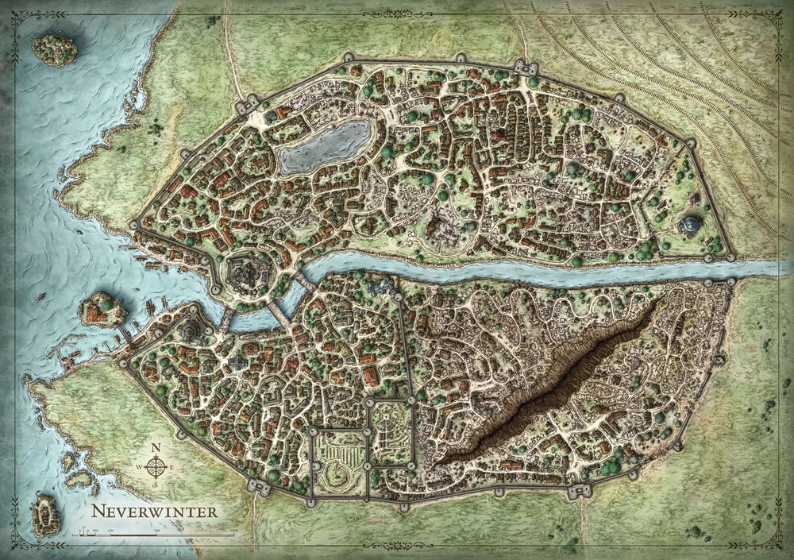

“Quote”
Inverno Remoto ficava no norte da Costa da Espada, na High Road entre Waterdeep e Luskan, especificamente entre Leilon e Porto Llast. A leste ficava a Floresta Inverno Remoto e, em seu coração, o vulcânico Monte Hotenow. O rio Inverno Remoto foi aquecido por elementais do fogo que viviam sob o vulcão antes de fluir pela floresta e pela cidade. Levava consigo seu calor sobrenatural, evitando que o rio congelasse no inverno e que os jardins ficassem verdes o ano todo. O calor emitido pelo rio criou um clima quente permanente na área imediata. A sudeste de Inverno Remoto ficava o mosteiro de Helm's Hold.
Descrição
O primeiro assentamento na Fronteira Selvagem foi uma cidade élfica conhecida como Illefarn, uma nação movimentada após a época das Guerras da Coroa. Eventualmente, Illefarn foi dividida em três nações, das quais Iliyanbruen era a mais proeminente. Iliyanbruen foi enfraquecido por invasões orcs, que abriram caminho para Eigersstor, o primeiro assentamento multirracial na área, que mais tarde seria chamado de Neverwinter.
Neverwinter tornou-se um centro de civilização, paz e cultura e foi amplamente visto como uma maravilha pelos visitantes. Esta tendência durou, aparentemente ininterrupta desde a sua fundação até o Ano da Magia Selvagem, 1372 DR, quando uma doença conhecida como o Lamento da Morte matou a maioria dos habitantes da cidade. Então, no Ano do Fogo Azul, 1385 CV, a Praga Mágica atingiu Neverwinter e toda Faerûn.
O século que se seguiu viu a ascensão do poder de um novo Netheril. Os legalistas Netherese se infiltraram na estrutura de poder do enfraquecido Neverwinter, mas seus esforços foram desviados pela erupção do Monte Hotenow no Ano do Conhecimento Desenterrado, 1451 CV, destruindo a cidade e matando a família governante Alagondar.
No Ano dos Três Heróis Unidos, 1467 CV, Lord Dagult Neverember, vendo uma oportunidade de aumentar seu império financeiro, contratou trabalhadores para ajudar a reconstruir a cidade e mercenários Mintarn para protegê-la de monstros e bandidos. Alegando ser um descendente dos antigos governantes de Neverwinter e, portanto, o legítimo "Lorde Protetor" da cidade, Dagult iniciou o movimento New Neverwinter. Lord Neverember investiu grande parte de sua própria fortuna para reconstruir a infraestrutura da cidade, comprar a participação dos mercadores para enviar suas caravanas novamente para Neverwinter e até mesmo garantir que os refugiados de Neverwintan tivessem comida e ouro suficientes em mãos. Em 1491 CV, os esforços de Neverember para reconstruir a cidade tiveram sucesso, e Neverwinter foi lentamente restaurado como um centro de civilização na Costa da Espada Norte.